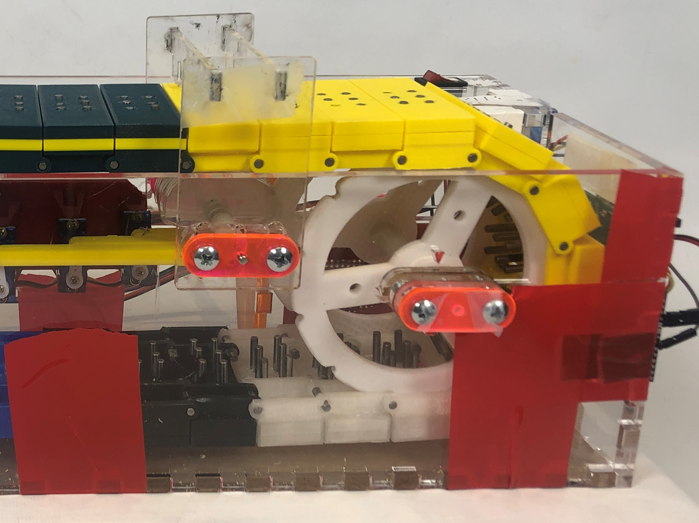

Mechanical
{kind=link}
Housing
To create the housing, we laser cut a sheet of 1/4"-thick clear acrylic into plates that finger joint together. It has mounting geometry for all of the components of the braille display. We cut the housing pieces before we had finalized the design of some components. To facilitate rapid prototyping and design flexibility, we did not glue the housing together. This allowed us to remove and modify individual panels after the initial fabrication. We used this design flexibility to add in mounting holes for circuit boards and integrate the reset mechanism late in Sprint 3.
{kind=link}
Mounts
The micro-servos are all mounted in-line, parallel to the bottom plate of the chassis. Due to this and the cams sharing a common axis of rotation, they had to be mounted such that the linkages would not interfere with one another. To keep this from happening, the farther away a servo is from its cam, the farther away it is from the back of the housing. The mount is a single 3D printed piece that mounts to the inside of back wall of housing.
The stepper motor mount attaches to the outside of the back of the housing. One set of bolts attaches the stepper motor to both the mount and to the back of the housing. Another set of bolts only connects the mount to the housing. In addition to the bolts, the motor has a platform that it rests on, keeping it from floating with only the bolts holding it up.
Chain of Braille Cells
One of the primary costs of a traditional braille display is the high number of actuators needed for each cell of braille. As the number of cells available in the display increases, so does the cost of the display. Our budget constraints meant that we could not follow the traditional path of six to eight actuators for each braille cell. If we wanted to create a braille display with a useful number of characters, we needed to get creative with our design.
{kind=link}
To work around the limited number of actuators, we decided to create a chain of braille cells (Cell Chain) that would move relative to a fixed actuator mechanism. Using this method, we can create a braille display of any size, and the cost of actuators does not increase.
To allow for easier modification, we included a few "blank" spots in the chain where there is not a braille cell. Instead, there are individual links that complete the chain on each side and empty space in between the sprockets. The empty space left by these blanks gave us room to reach into the device and make adjustments as needed.
Braille Cells and Dots
Braille Cell: Each braille cell in the Cell Chain was 3D-printed. They each have a top half and a bottom half that get glued together to form a single cell. The cells are supported by one sprocket on each side of the cell. A single cell is wide enough that it connects to two sprockets, one on each side of the cell.
Braille Dots: To create the braille dots, we're using 1/8" steel dowel pins that have a sliding friction fit with the six holes in the cells. We use those same pins to connect the cells together to form the Cell Chain.
Sprockets
We designed and 3D-printed custom sprockets to drive the Cell Chain. We have one driven/powered sprocket that connects to the stepper motor and 3 idle sprockets. The profile of the sprockets was dictated by the width of a cell.
Cams (Creating Braille)
As mentioned in the Cell Chain section, the chain of braille cells moves relative to a fixed actuator mechanism. We decided to go with a cam system to set the pins since it would be relatively straightforward both to design and fabricate. There are 3 cams, one for each row of pins. The cams use four different motions to set braille pins.
- Neutral position: neither pin is pushed up; the cam stays flat.
- Left pin up: the cam rotates clockwise and pushes up the left pin
- Right pin up: the cam rotates counterclockwise and pushes up the right pin
- Both pins up: the cam rotates in both directions and pushes up both pins
Each cam connects to its own micro-servo by a linkage attached at the bottom of the cam on one end and the servo horn on the other. Cams are composed of multiple layers of 1/8" acrylic and the linkage attached only to one layer of acrylic. Additional layers are taped to the center "driven" layer. The cams share a common axis of rotation that runs perpendicular to the direction of the belt travel. The bottom of the cell chain, and consequently the pins, are perpendicular to front and back walls of the housing so giving them this shared axis makes it easy to place the cams relative to the cell chain.
Cell Ceiling
Once we started testing our system, we discovered that it's almost impossible to fully tension the braille chain. As a result, the chain always has some give to it. This causes issues when the cams have to interact with the bottoms of the pins. The friction holding some of the pins in was so great that when the cams tried to push up those pins, the pins would stay in place and instead the chain would get pushed up. The cell ceiling was added to keep the chain from getting pushed up by the cams. It serves as a "ceiling" that the cell gets pushed against so that the pins get moved instead, as intended. It mounts on slots to the front and back walls of the housing. The slots allow for adjustability so that we have more adjustment with where exactly on the cams that the pins hit. The cell ceiling was laser cut out of acrylic.
Reset Mechanism
After the pins get set by the cams and read by the user, they all have to be set to the down position before they can be set by the cams again. To reduce complexity, we decided to do this mechanically by taking advantage of the rotation of the cell chain. Further along in the travel of the cell chain, there is a wedge that the top of the pins hit. As the cell chain rotates, the pins get forced down. The challenge with this was properly setting the spacing between this and the surface of the cells. If it was too far away, then the pins would not get reset. It it was too close, than the friction between the reset and the top of the cell would be so great that the stepper motor could not overcome it. Initially, the reset was too close for all of the cells. We added spacers to move it slightly further away from the top of the chain. The issue we then ran into was that some pins were had super high friction and when the wedge hit the pins, the whole cell would be pushed down instead of just the pins. To help mitigate this, we moved where the reset mechanism was mounted so that it was mounted closer to the sprocket. This made it so that there was nowhere for the chain to flex as it was being supported by the sprocket. Now, instead of the chain getting pushed down, the pins would get pushed down as the resistance there was less than the resistance from the sprocket supporting the chain.